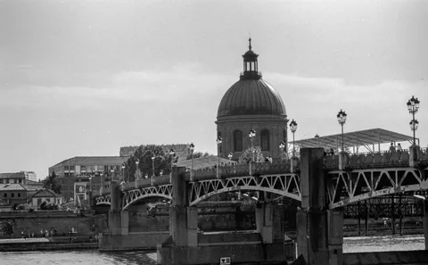

Aller au contenu
Les univers
Tirages photo
Regards personnels de Thomas Soleil
Couvent
Voir la série

Toulouse
Voir la série
Échappées en montagne
Voir la série
Photographie 01
Photographie 02
Photographie 03
Photographie 04
Photographie 05
Photographie 06
Photographie 07
Photographie 08
←
→
×
‹
›
← → pour naviguer · Échap pour fermer
Demander un tirage